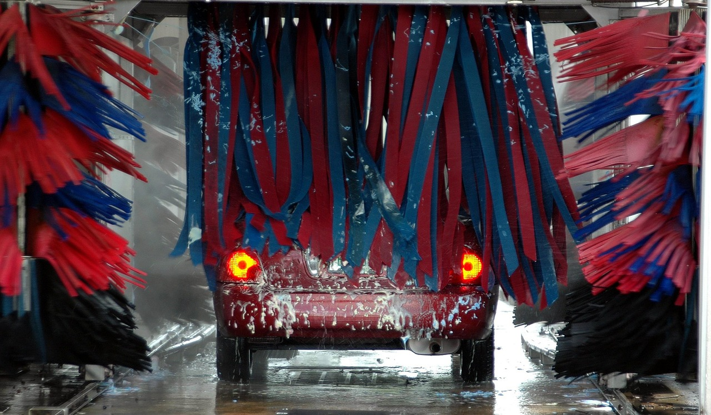

Muratpaşa · Antalya
Kuyrukta kaç araç var, gelmeden gör.
Dükkâna gelmeden önce tahmini bekleme süreni gör. Sürekli yıkatıyorsan aylık sınırsız aboneliğe geç: plakan okunur, kasada para ödemezsin.
Canlı kuyruk (demo)Aylık sınırsız iç-dışBinek · SUV · ticari
Canlı kuyruk
Şu an kuyrukta kaç araç, ne kadar beklersin?
Araç tipini ve yıkamayı seç; sıraya yazıl. Tahmin, önündeki işlerin kalan süresinden hesaplanır.
Fiyat

Elde köpükBoya yüzeyine nazik 
Cila ve parlatmaDetay paketinde
Araç tipine göre net fiyat.
Binek, SUV ve ticari için ayrı liste. Önce seç, fiyatı gör; kasada sürpriz çıkmasın.
Aylık abonelik
Sınırsız yıkama, tek aylık ücret.
Plan seç, plakanı yaz, öde (demo), abonelik kartın hazır. İstediğin an iptal et.
- Plakan okununca abonelik doğrulanır.
- Sınırsız = adil kullanım: günde en fazla 1 yıkama.
- İptal tek dokunuş; dönem sonuna kadar kullanırsın.
Nasıl çalışır
Dört adımda yıkama.
Telefon yeter; uygulama indirmek gerekmez.
- Kuyruğa bakTahmini bekleme sayfada.
- Sıraya yazılAraç tipini ve yıkamayı seç.
- Gel, teslim etSıran gelince mesaj gelir.
- Parlak çıkAbonesen ödeme yok, plaka okunur.
Konum ve saat
Bizi bulmak kolay.
Kurgusal işletme; gerçek adres, saat ve harita bağlantısı müşterinin Google işletme profilinden gelir.
Adres
Muratpaşa / Antalya (örnek)
Muratpaşa / Antalya (örnek)
Saatler
Hafta içi 08:00-19:00 (örnek)
Hafta içi 08:00-19:00 (örnek)
WhatsApp
Kuyruk ve abonelik sorusu için (demo bağlantı yok)
Kuyruk ve abonelik sorusu için (demo bağlantı yok)